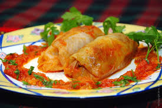
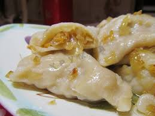
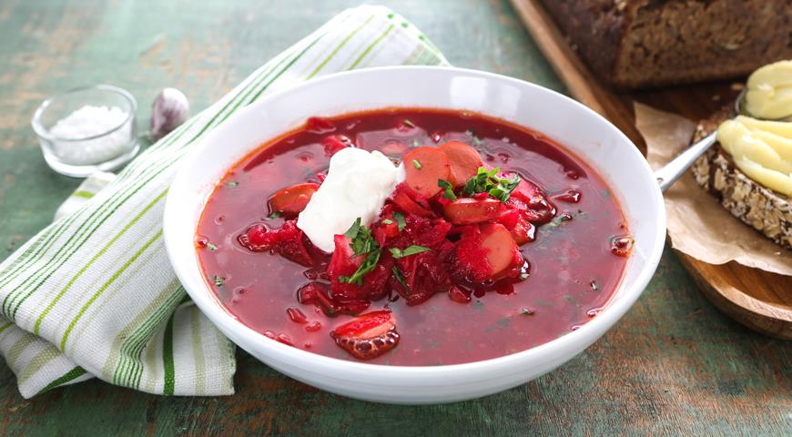

| Назва |
Картинка |
Як готувати |
| Голубці |
 |
М’ясо порізати на маленькі кубики і підсмажити до рум’яної скоринки. Цибулю підсмажити на олії до напівготовності. Додати натерту моркву і готувати до готовності. Окремо зварити рис до напівготовності. Додати підсмажену цибулю, моркву та м’ясо. Посолити і поперчити. Добре перемішати. Капусту запарити в кип’ятку 7-8 хвилин, розібрати на листя, відрізати потовщення. Листочок скрутити конусом покласти в середину начинку та закрутити верхівку всередину. Дно каструлі встелити потовщеннями від листя капусти, а потім щільно скласти у каструлю голубці. Залити заливкою, дати закипіти, далі – зменшити вогонь до повільного та готувати близько 1,5 години. Для заливки – змішати томатний сік з рідкою сметаною, водою та додати сіль. |
| Вареники |
 |
- У миску висипте борошно, соду і сіль, перемішайте.
- Долийте в склянку з сироваткою воду до країв і розмішайте.
- Доливаючи рідину в борошно, замішують тісто. Потім 20 хвилин потримайте його в харчовій плівці.
- Зліпити вареники. Викладіть вареники в простору каструлю, наповнену киплячою підсоленою водою на дві третини.
- Варіть не більше 1 хвилини після спливання.
Переймаючись питанням, як приготувати тісто для вареників, цілком можна взяти на озброєння цей нескладний спосіб.
Поряд з «кефірний» він вважається класикою української кухні. |
| Борщ |
 |
Спершу, що потрібно зробити – зварити м’ясо. Поки наварюється м’ясний бульйон, потрібно помити та порізати на кубики картоплю, пошаткувати або порізати ножем капусту, подрібнити цибулю, потерти моркву на дрібній тертці та буряки – на буряковій тертці.
На невеликому вогні тушимо червоний буряк. Можна його тушити на олії, на смальці або на м’ясному бульйоні. До буряка додаємо томатну пасту та сметану. Буряк тушимо орієнтовно 15-20 хв.
На іншій сковорідці розігріваємо 2 ст. ложки смальцю або олії, додаємо туди цибулю, підсмажуємо до прозорості, до цибулі додаємо натерту моркву і тушимо ще 2-3 хв.
До м’яса з м’ясним бульйоном додаємо картоплю, лавровий лист, перець горошком та підсмажену цибулю з морквою. Варимо 15 хв. і добавляємо до борщу червоний буряк, капусту, сіль (більше половини столової ложки, цукор, лимонну кислоту. Залишаємо на легенькому вогні нашу страву варитися ще 15 хв. Потім пробуємо чи всі складники зварені, перчимо, посипаємо зверху борщ подрібненою зеленню та часником і борщ готовий! |